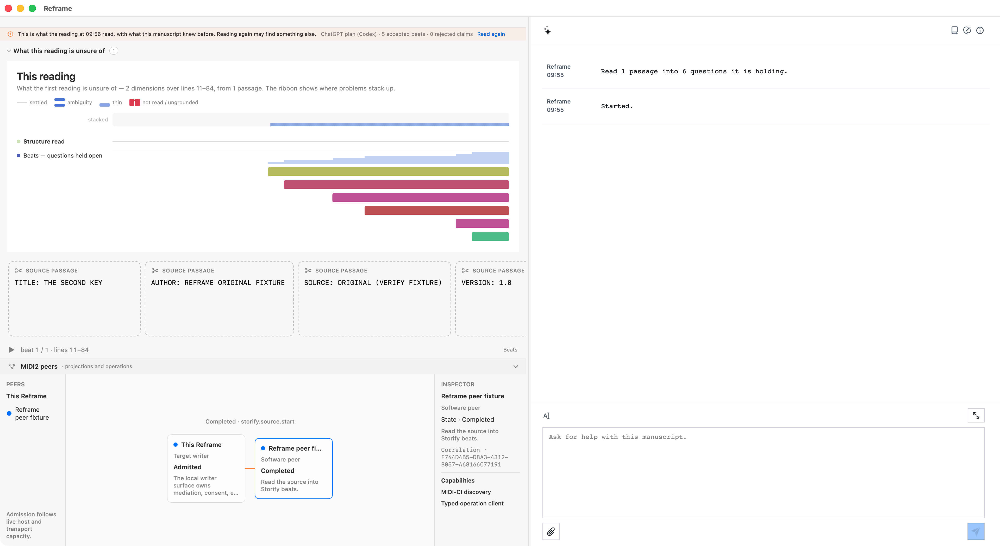

Target authority
Reframe owns semantic mediation, provider/lane selection, writer consent, execution, and FountainStore proof.
One Reframe process can drive another through the governed MIDI2 backplane while the target keeps mediation, consent, execution, and Store authority.
Read the capability record → · Read the sanitized evidence →
The peer requested the existing storify.source.start operation. The target exposed its normal writer confirmation, persisted the terminal Store lifecycle, and projected the completed operation back over MIDI2.

Reframe owns semantic mediation, provider/lane selection, writer consent, execution, and FountainStore proof.
MIDI2 carries typed intent and correlated lifecycle events. The MIDI2 peers surface makes the relationship visible.
No physical MIDI2 hardware, Bluetooth transport, or unbounded remote capacity is claimed by this run.